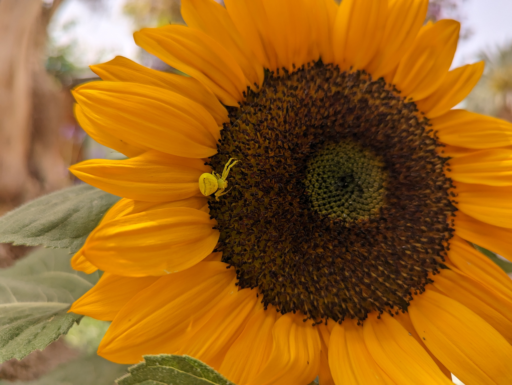
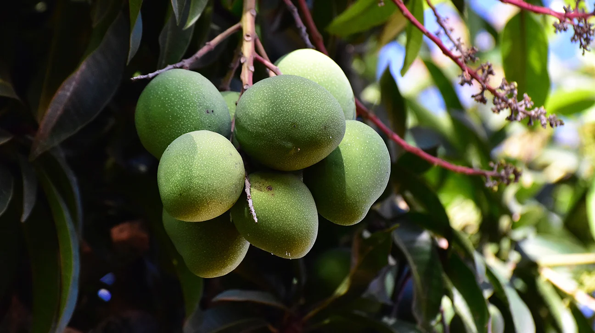
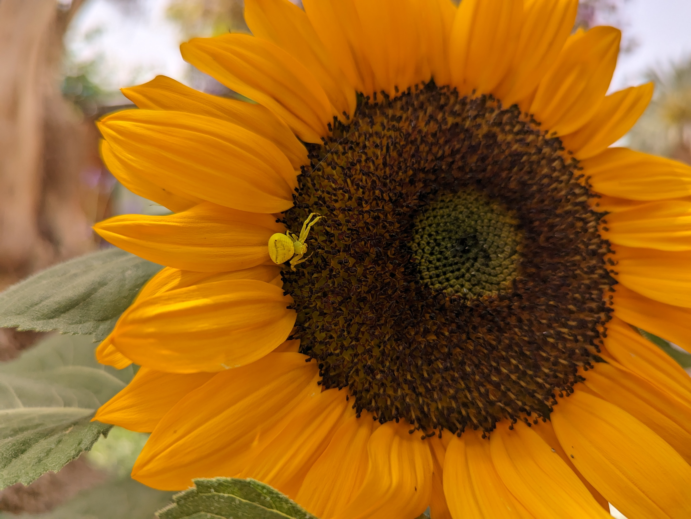
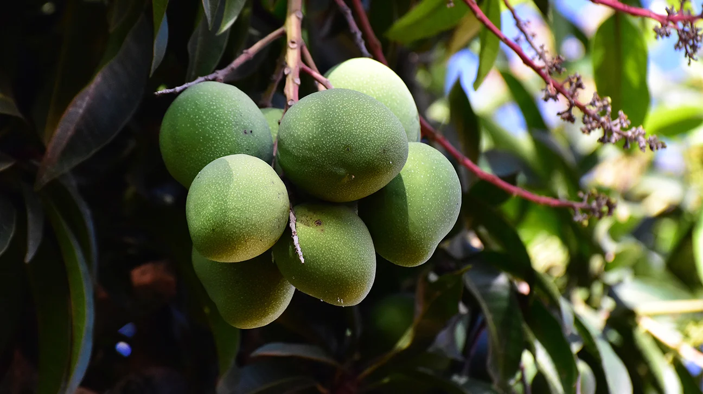

About Us
The Tsuberi 10 story is one of passion, perseverance, and the beauty of family farming in the heart of Israel's Negev desert. Nestled in the Arava region, our farm is a testament to the transformative power of agriculture in challenging environments. Gabi, the devoted father and skilled farmer, works tirelessly alongside his wife Nurit to nurture their thriving crops of mangoes, sunflowers, and dates. Together, they've turned the arid landscape into a flourishing oasis, showcasing the potential of sustainable farming in the desert. The Tsuberi family's commitment to quality and innovation has made their produce sought after throughout Israel and beyond. As they manage their meshek (farm) with dedication and care, Gabi and Nurit not only cultivate crops but also sow the seeds of a legacy, passing down their love for the land and their farming expertise to future generations.